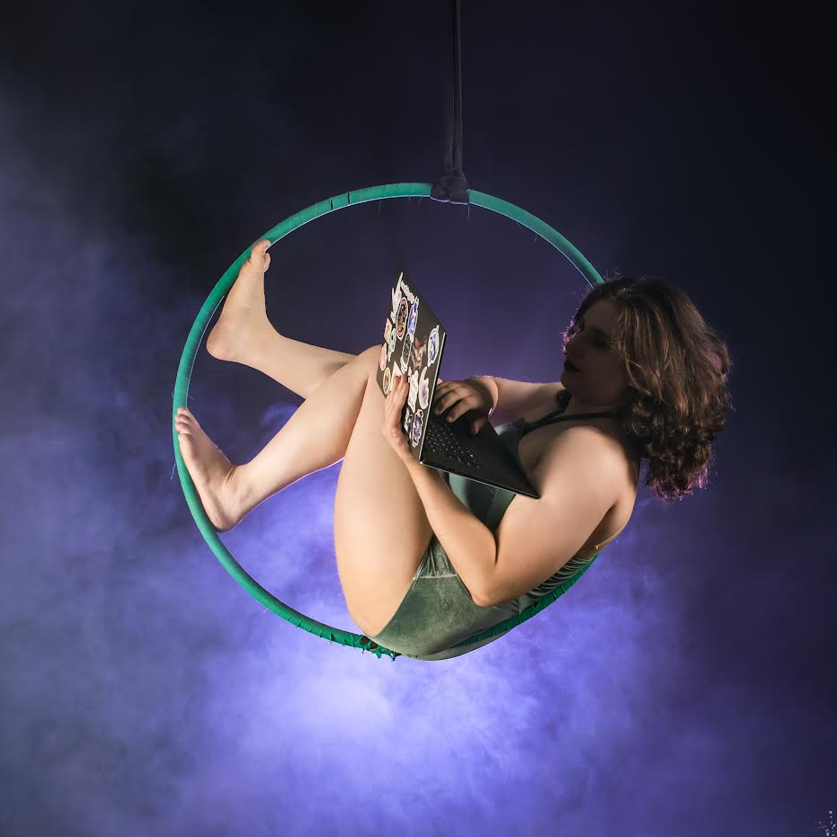

Hi! I'm Connie Scoullis 👋
I am a software engineer in San Jose, CA, currently making JavaScript magic at Cisco Systems.
I am a software engineer in San Jose, CA, currently making JavaScript magic at Cisco Systems.
Outside of tech and coding, I love Brazilian jiujitsu and circus/aerial arts. If I am not doing any of those things, you can find me in the kitchen cooking and/or baking up a storm.
I also have two cats that I love and adore, and will take any opportunity to show them off. The big white and gray cat is Otto, and the small silver/black tabby is Cannoli.